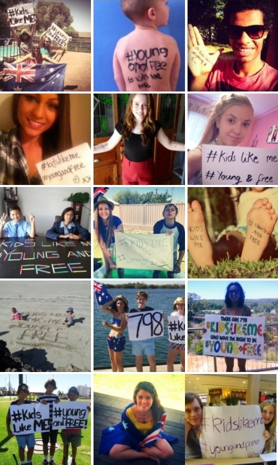

Australia Day
2013
#KidsLikeMe #YoungAndFree

The 2013 Australia Day action, #kidslikeme #youngandfree action was a brilliant kick start for the Australian Young Christian Students into the new year. High school students from around the country wrote on their skin, or on paper, #kidslikeme #youngandfree, and took photos of themselves as a petition to end child immigration detention.
The Australian Young Christian Students' '#kidslikeme #youngandfree' was an action that derived from our national campaign, 100% Respect: Youth Refugees and Asylum Seekers 'and you thought detention was just in school'.
The campaign focuses on the deprivation of childhood that young people within immigration detention face that is contradictory of Australia's obligation to the UN Conventions of the Right of the Child. The campaign aims to change public opinion through informing the community about the conditions from which asylum seekers escape and also what they eventually meet when they arrive in Australia.
As young people in a country we believe to be affluent, the conditions that are pressed upon the vulnerable are substandard and do not reflect the compassion and equality we see as virtues of the Australian culture and Christian faith.
High school students from across the nation responded enthusiastically to the action with hundreds of photos gathered, all unique but in solidarity with the cause of raising awareness and promoting the questioning of our country's practices on such a iconic day in the Australian calendar.
The community support for the Australia Day action was supportive and positive with many students having passers by chat to them about the issue and even take a photo themselves with the #kidslikeme #youngandfree posters.
Currently the photos are being collated and put into a scrapbook album to be sent to the new Minister for Immigration.
-
ACMRO News
2012
For those who've come across the seas, we've boundless plains to share

The Young Christian Students movement have launched their new campaign, '100% Respect: Youth Refugees and Asylum Seekers' at their January 2012 National Conference and followed with a tremendously well supported awareness action on Australia Day to kick-start the campaign across the nation.
The Young Christian Students movement uses the Cardijn method of 'See, Judge and Act' to empower high school student to critically analyse issues around them in light of their faith, and take action to change the situation.
Mai Mitsumori-Miller, a Perth Year 12 student, co-ordinated a thorough 'See, Judge, Act' of the issues surrounding youth refugees and asylum seekers at the National Conference in Melrose. This resulted in a direct service aim for local students to educate people in their community about the media perception of the issue, and an advocacy aim targeted at the Federal Government to uphold the UN Convention for Rights of a Child for refugees and asylum seekers under the age of eighteen.
"The 100% Respect: Youth Refugees and Asylum Seekers campaign was chosen as it was an issue that was identified as relative to many of the students throughout 2011. Refugees and asylum seekers is a major political, social and media topic in our society today, and as students the lives of people our own age was seen as an important place to begin our relationship and understanding of those fleeing their homelands."
"Students will be continually reviewing the issues throughout the two year campaign, and be equipped with the necessary skills to take action on local and national levels based on their faith," Mai said.
The Conference was attended by around 45 students from all around the country as well as by Bishop Biancinni of Geraldton, and Bishop O'Kelly of Port Pirie. Hannah Stavrou, the 16 year-old Conference Co-ordinator from Barmera, South Australia stated that "this conference gave like-minded and passionate students the chance to create great action that will transform not only themselves but their communities and the world."
The first action of the Youth Refugees and Asylum seekers campaign took place on Australia Day and was the biggest nationally co-ordinated action from the movement for very many years. Almost 1000 people from across the country attended the Facebook event 'bare skin for refugees and asylum seekers' which asked people to write 'for those that come across the seas, we've boundless plains to share' on their skin. This was a huge success, with hundreds of photos uploaded onto the 'Australian YCS'
Facebook page in support of refugees and asylum seekers. These will be forwarded to politicians to bring about just policies and practises that uphold the human dignity of these young people.
The previous National Chairperson, Liam McGuire of Townsville is excited about the campaign despite finishing school in 2011.
"With all members excited about the new campaign, having their say and already taking action, we hope this is going to be the most effective campaign in our recent history."
-
Catholic Archdiocese of Melbourne